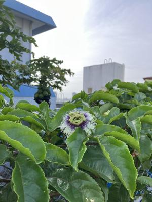

うるがいの話 ある日
最新: 勘違い【うるがいの話 ある日】とは 一日だけのプログです
『うるがいの話』の最新一日だけのプログで、通信料が少なく経済的だ。カニの画像をクリックすると全ての日付が載る『うるがいの話』サイトを表示します
|
|
【うるがいの話】 うるがい(ｳﾙｶﾞｲ urugai)とは、『もずくがに』の名前でとても大きくなります。 |
|---|---|
|
|
【カミマヤーの話】 猫のことを方言でマヤーといいます。カミマヤー（kamimayaa）とは、神の猫のことです。 |
|
【たながぁの音楽】 たながぁ（ﾀﾅｶﾞｰ tanagaa）とは手長えびのことで、何種類かあり大きいのは車 エビぐらいになります。 |

|
【ぶながぁの話】 ぶながぁ(ﾌﾞﾅｶﾞｰ bunagaa)とは、赤い髪の毛、赤い身体、そして身長は１ｍ２０ｃｍ ぐらい、川の蟹を食べているの目撃された。場所は沖縄県国頭郡大宜味村のと ある村僕の隣近所に住んでいる爺さんから、聞いた話です。 |
|
|
【ギーマの話】 ギーマ(giima)とは、山原の里山に咲くスズランに似た、 花を付けます。実は食べられます、 気が付くと口の周りが紫になっています。 |
2024年03月29日 (金）勘違い
16:16

昼１３時前に、先週実施した飲み会の店長から電話があり、会話をしていた
らなぜか、おかしい？退職した会社の同姓の管理職だった。４月からアドバ
イザーを頼んで当室の在り方を健闘していく作業にはいるが、なにがしら参
加できないかと言う。（タワケ）私は、現在とある会社で仕事しています、
かつ、４月から一月ほど本土に行っていますと断る。
電話がおわったあとにオギさんから『何処にいる？」と電話がきた。家にい
るけど、いまから研修会館へいくけど（午後２時開始と思っていた）、『
リモート会議始まっているけど』、オェー、自宅から参加しますと、師匠か
らもらったマイク付きヘッドホーンを使って、開始１２分遅れで参加した。
だけど説明している人（ＭＣ）、誰だか知らされていない。なんとなく、
分かるが。最後のところでプロジェクトの体制図が映し出され、なんとその
ＭＣの下に協力会社のリーダーとして私の名前があった。ムッ！、会議のな
かでＭＣがリーダーさんてだれですかとの質問に、私ですと答えたが、マイ
クの設定がダメだったようで手を揚げて合図した。ところで、プロジェクト
の詳細はまったくオギさん達から皆聞かされていない！。ＭＣたるその人が
質問は？ありますが、皆はダンマリ状態（そらそうだろう、なにも教えられ
ていないのだから）、唯一、オギさんが質問する。すると、ＭＣがだれです
かと尋ねると事業部長のオギですと、え！、ＭＣはオギさん知らない！、な
んなんなんだこの会議は。
こうやって隠蔽体質のプロジェクトは始まったのである。そもそも、なんで
リモート会議の開始時間を間違えたのか、追っかけてみるとオギさんが数回
変更しているのである、で、老人の私もさらに確定した時間を見過ごしてい
たと気づいた。
私の研修会館への出勤は、昨日で終わり。２０代の二人は、来月から東京で
仕事、お別れの挨拶をした。おお！、感激。
１６時０３分 ビットコインの総資産 ￥３０、９９８（↑６）